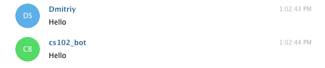
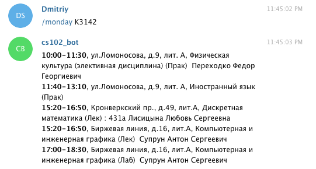

Бот для мессенджера Telegram
Эта работа посвящена созданию бота для социальной сети Telegram. Для ее выполнения вам понадобится зарегистрироваться на сайте https://telegram.org, если ранее вы этого не сделали.
Мотивация
18 апреля 2016 года появилась новость, что выделенен призовой фонд в размере одного миллиона долларов для всех желающих поучаствовать в разработке собственного бота для сети Telegram. Гранты выдаваемые участникам начинались от 25 тысяч долларов.
В сентябре 2019 года Telegram анонсировал новые конкурсы с суммарным призовым фондом более $1,000,000.
Meet the Botfather
Предварительно мы рассмотрим простой пример создания так называемого эхо-бота, т.е. бота, который повторяет присланное ему сообщение. Чтобы зарегистрировать нового бота в телеграмме, вам нужно выполнить несколько шагов, которые подробно описаны в руководстве разработчика ботов. Ниже приведен пример регистрации бота с именем cs102_bot:

Обратите внимание, что последним ответом BotFather'а был токен доступа, который требуется для авторизации бота и выполнения запросов к API.
Warning
У вас будет свой токен доступа, которым не следует делиться с другими.
На текущем этапе созданный нами бот ничего не умеет делать и не знает ни одной команды. Для «обучения» бота мы будем использовать Telegram Bot API:
The Bot API is an HTTP-based interface created for developers keen on building bots for Telegram.
Но, в отличии от работы с «API Вконтакте», мы не будем напрямую взамодействовать с API, а воспользуемся модулем pyTelegramBotAPI. Подробное руководство на русском языке по работе с этим модулем вы можете найти тут.
Теперь нам нужно установить модуль pyTelegramBotAPI:
(cs102) $ python -m pip install pytelegrambotapi
Далее приведен пример эхо-бота, который дублирует каждое сообщение:
import telebot
access_token = # PUT YOUR ACCESS TOKEN HERE
telegram.apihelper.proxy = {'https': 'https://23.237.22.172:3128'}
# Создание бота с указанным токеном доступа
bot = telebot.TeleBot(access_token)
# Бот будет отвечать только на текстовые сообщения
@bot.message_handler(content_types=['text'])
def echo(message: str) -> None:
bot.send_message(message.chat.id, message.text)
if __name__ == '__main__':
bot.polling()
Note
Обратите внимание, что нам необходимо использовать proxy-соединение по причине блокирования Telegram в России. Если указанный proxy не работает, то попробуйте выбрать другой, например, на сайте hidemy.name поддерживается большая онлайн-база прокси-листов.
Запустить бота можно следующим образом:
(cs102) $ python echo_bot.py
Теперь зайдите в телеграмм и напишите вашему боту любое сообщение:

Обучаем бота командам
Целью работы является написать бота, который бы позволил получить расписание занятий для любой группы «Университета ИТМО», для этого обучим нашего бота понимать следующие команды:
near_lesson GROUP_NUMBER- ближайшее занятие для указанной группы;DAY WEEK_NUMBER GROUP_NUMBER- расписание занятий в указанный день (monday, thuesday, ...). Неделя может быть четной (1), нечетной (2) или же четная и нечетная (0);tommorow GROUP_NUMBER- расписание на следующий день (если это воскресенье, то выводится расписание на понедельник, учитывая, что неделя может быть четной или нечетной);all WEEK_NUMBER GROUP_NUMBER- расписание на всю неделю.
Разберем пример с выводом расписания на понедельник. Для этого нам нужно получить код html-страницы для соответствующей группы, а затем из этой страницы выделить интересующую нас информацию.
Чтобы вам было проще ориентироваться в работе - рекомендуется скачать пример любой страницы с расписанием:
</table><h4 class="rasp_day_mobile">Понедельник</h4>
<div class="rasp_tabl_day">
<table id="1day" class="rasp_tabl" border="0" cellpadding="0" cellspacing="0">
<tbody>
<tr>
<th class="day">
<script>$("#1day_btn").show();</script>
<span>Пн</span>
</th>
<td class="time">
<span>08:20-09:50</span>
<dt style="font-size:14px;"></dt>
<dd class="rasp_aud_mobile"></dd>
<dt class="rasp_corp_mobile">
<i class="fa fa-map-marker"></i>
<span>ул.Ломоносова, д.9, лит. Е</span>
</dt>
</td>
Чтобы получить исходный код страницы достаточно выполнить GET-запрос к адресу, который имеет следующий формат:
http://www.ifmo.ru/ru/schedule/0/GROUP/WEEK/raspisanie_zanyatiy_GROUP.htm
Где WEEK это неделя (четная-нечетная), если неделя не указана, то расписание включает и четную и нечетную недели; GROUP - номер группы.
Note
Сайт Университета ИТМО не приветствует большого числа обращений. Поэтому подумайте о возможности сохранения страниц с расписанием локально или кешировании их в памяти на время работы бота, чтобы при повторном обращении к одной и той же странице боту не приходилось делать новый запрос к серверу университета.
import requests
import config
def get_page(group: str, week: str='') -> str:
if week:
week = str(week) + '/'
url = f'{config.domain}/{group}/{week}raspisanie_zanyatiy_{group}.htm'
response = requests.get(url)
web_page = response.text
return web_page
>>> page = get_page('K3142')
>>> page[595:631]
'Расписание занятий Университета ИТМО'
>>> ''.join(page[70439:71040].split())
'<h4class="rasp_day_mobile">Понедельник</h4><divclass="rasp_tabl_day"><tableid="1day"class="rasp_tabl"border="0"cellpadding="0"cellspacing="0"><tbody><tr><thclass="day"><script>$("#1day_btn").show();</script><span>Пн</span></th><tdclass="time"><span>08:20-09:50</span><dtstyle="font-size:14px;"></dt><ddclass="rasp_aud_mobile"></dd><dtclass="rasp_corp_mobile"><iclass="fafa-map-marker"></i><span>ул.Ломоносова,д.9,лит.Е</span></dt></td>'
Теперь из этой страницы нам нужно извлечь время занятий, место проведения, аудиторию и название дисциплины. Для этого нам понадобится HTML-парсер. В этой работе предлогается использовать модуль BeautifulSoup.
from bs4 import BeautifulSoup
from typing import List, Tuple
def get_schedule(web_page: str) -> Tuple[List[str], List[str], List[str]]:
soup = BeautifulSoup(web_page, "html5lib")
# Получаем таблицу с расписанием на понедельник
schedule_table = soup.find("table", attrs={"id": "1day"})
# Время проведения занятий
times_list = schedule_table.find_all("td", attrs={"class": "time"})
times_list = [time.span.text for time in times_list]
# Место проведения занятий
locations_list = schedule_table.find_all("td", attrs={"class": "room"})
locations_list = [room.span.text for room in locations_list]
# Название дисциплин и имена преподавателей
lessons_list = schedule_table.find_all("td", attrs={"class": "lesson"})
lessons_list = [lesson.text.split('\n\n') for lesson in lessons_list]
lessons_list = [', '.join([info for info in lesson_info if info]) for lesson_info in lessons_list]
return times_list, locations_list, lessons_list
Методы find и find_all позволяют найти теги с указанными атрибутами.
Таким образом, мы получили время, место и название дисциплины (получение номера аудитории остается для самостоятельного выполнения). Наконец добавим нашему боту возможность вывода расписания на понедельник:
@bot.message_handler(commands=['monday'])
def get_monday(message: str) -> None:
_, group = message.text.split()
web_page = get_page(group)
times_lst, locations_lst, lessons_lst = get_schedule(web_page)
resp = ''
for time, location, lession in zip(times_lst, locations_lst, lessons_lst):
resp += '<b>{}</b>, {}, {}\n'.format(time, location, lession)
bot.send_message(message.chat.id, resp, parse_mode='HTML')

Note
Вы можете легко обобщить функции get_monday и get_schedule на любой день недели.
Размещаем бота в Сети
Последняя часть работы посвящена размещению бота на облачной платформе Heroku.
От вас требуется зарегистрироваться на Heroku и создать там новое приложение:

В папке с вашим проектом создайте три файла:
runtime.txt- версия интерпретатора Python, которая требуется для запуска приложения;requirements.txt- модули, необходимые для работы приложения;Procfile- указывает тип приложения и главный класс (в нашем случае это python-приложение и файл bot.py соответственно).
Пример содержимого этих файлов приведен ниже:
### runtime.txt ###
python-3.8.0
### requirements.txt ###
beautifulsoup4==4.8.1
bs4==0.0.1
pyTelegramBotAPI==3.6.
requests==2.22.0
### Procfile ###
web: python3 bot.py
Далее зайдите на вкладку Deploy, где подробно описан процесс размещения вашего приложения на сервисе Heroku:

После пуша на heroku master приложение автоматически настраивает проект и запускает бота. При успешном завершении ваш бот должен работать на удалённой машине.
Чтобы проследить ход выполнения этих операций и найти возможные ошибки введите в консоли
heroku logs --tail.